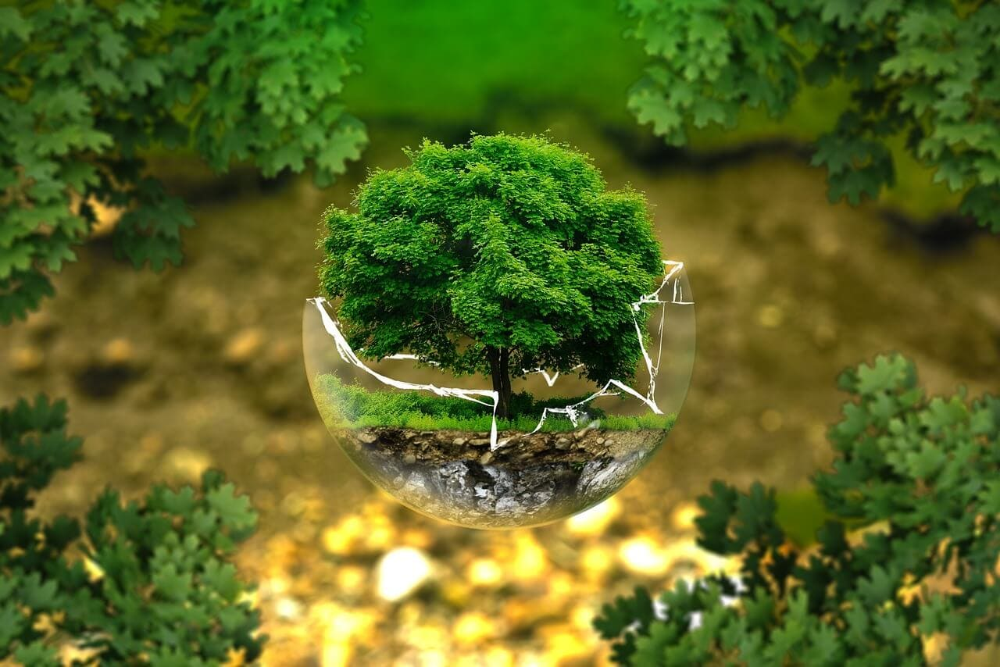

A preservação da fauna e flora é essencial para garantir a diversidade e a sustentabilidade do nosso planeta, neste artigo, exploraremos as ações transformadoras que estão sendo realizadas para proteger espécies ameaçadas, visando assegurar um futuro melhor para todos os seres vivos, conheça agora algumas iniciativas que estão fazendo a diferença.
Uma das maneiras mais eficazes de proteger as espécies ameaçadas é preservar seus habitats naturais, a destruição dos ecossistemas tem sido uma das principais causas da extinção de várias espécies, por isso, governos, organizações não governamentais e comunidades locais têm trabalhado em conjunto para estabelecer áreas de conservação, parques nacionais e reservas ambientais.
Essas áreas protegidas ajudam a limitar a interferência humana, permitindo que os animais e as plantas encontrem condições favoráveis para sobreviver e se reproduzir, além disso, elas desempenham um papel fundamental na manutenção dos serviços ecossistêmicos, como a purificação do ar e da água, a regulação do clima e a conservação do solo.
A caça ilegal e o tráfico de animais são atividades que contribuem significativamente para o declínio das populações de espécies ameaçadas, governos e organizações internacionais têm implementado medidas cada vez mais rigorosas para combater essas práticas ilegais, o fortalecimento das leis e o aumento da fiscalização têm sido cruciais para coibir essas atividades e responsabilizar os infratores.
Além disso, a conscientização da população sobre os impactos negativos da caça e do tráfico de animais tem sido uma estratégia fundamental, educação ambiental, campanhas de sensibilização e programas de conservação em comunidades locais têm desempenhado um papel importante na mudança de atitudes e comportamentos em relação à proteção da fauna.
Para espécies que estão à beira da extinção, programas de reprodução em cativeiro têm sido implementados com sucesso, esses programas visam aumentar as populações de espécies ameaçadas, garantindo sua sobrevivência a longo prazo, os animais nascidos em cativeiro são cuidadosamente monitorados e preparados para a reintrodução em seus habitats naturais quando estão prontos.
A reintrodução na natureza é uma etapa crítica e exige cuidados especiais, os indivíduos devem ser preparados física e comportamentalmente para sobreviverem em seu ambiente natural, acompanhamento constante e pesquisas científicas são fundamentais para avaliar o sucesso desses programas e fazer ajustes quando necessário.
A proteção da flora também desempenha um papel crucial na preservação das espécies ameaçadas, muitas plantas são fundamentais para a cadeia alimentar e fornecem habitat para inúmeras espécies animais, além disso, muitas espécies vegetais possuem propriedades medicinais valiosas e podem contribuir para o desenvolvimento de novos medicamentos.
Programas de conservação de espécies vegetais têm sido implementados em todo o mundo, eles envolvem a identificação e a catalogação de plantas ameaçadas, a criação de bancos de sementes e o estabelecimento de jardins botânicos, além disso, a educação sobre a importância da preservação das plantas e o incentivo ao uso sustentável dos recursos vegetais são estratégias essenciais para garantir a sobrevivência das espécies.
A proteção das espécies ameaçadas requer esforços conjuntos em nível global, parcerias internacionais entre governos, organizações não governamentais, instituições científicas e comunidades locais têm se mostrado eficazes na troca de conhecimentos, recursos e melhores práticas.
Além disso, acordos internacionais, como a Convenção sobre o Comércio Internacional das Espécies da Fauna e Flora Selvagens Ameaçadas de Extinção (CITES), têm desempenhado um papel crucial na regulamentação do comércio de espécies ameaçadas, garantindo que o comércio seja realizado de forma sustentável e legal.
A proteção das espécies ameaçadas da fauna e flora é uma responsabilidade compartilhada por todos nós, as ações transformadoras mencionadas neste artigo são apenas algumas das iniciativas em andamento para garantir um futuro sustentável para o nosso planeta.
Preservar os habitats naturais, combater a caça ilegal, promover a reprodução em cativeiro, conservar espécies vegetais e estabelecer parcerias internacionais são passos importantes para reverter o declínio da biodiversidade e proteger as espécies ameaçadas.
Somente com a cooperação e o engajamento de governos, organizações e indivíduos é possível alcançar resultados significativos na proteção da fauna e flora, todos nós podemos fazer a diferença por meio de nossas ações diárias e do apoio a iniciativas de conservação, juntos, podemos garantir um futuro mais equilibrado e sustentável para as gerações presentes e futuras.